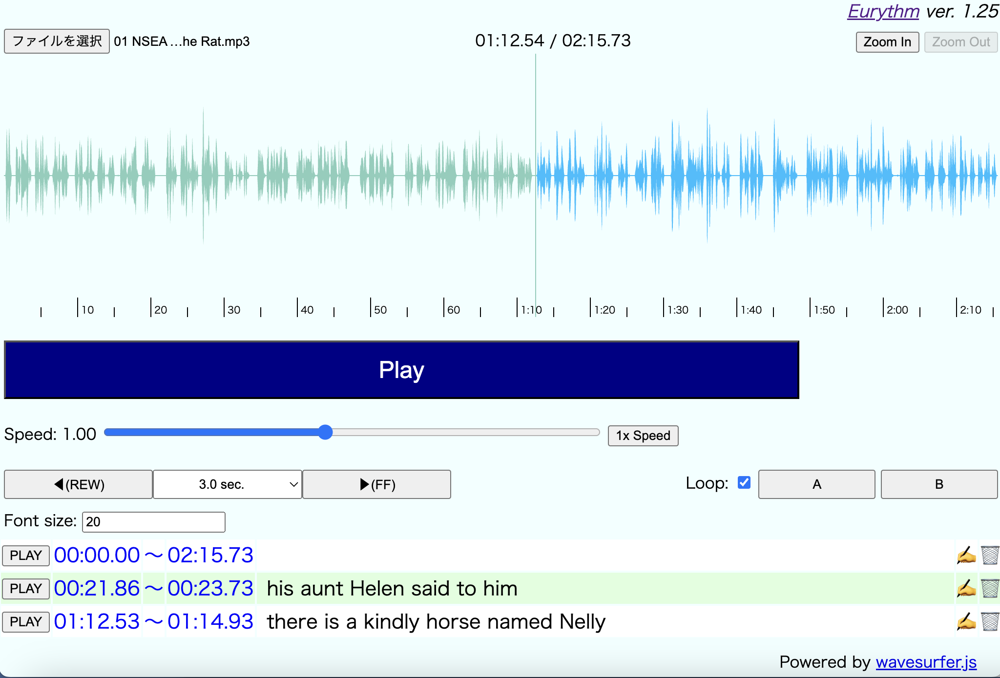

Eurythm - ヘルプ
1. これは何？
Eurythm（ユリズム）は、英語などの言語学習に使用することを念頭に置いて開発されたプレイヤーアプリです。
2. 画面イメージ

3. 使用方法
このアプリはウェブアプリであるためインストールは不要です。このため、ブラウザーからhttps://mmurak.github.io/eurythmにアクセスするだけで起動します。
3-1. 音源の読み込み
音源を読み込むにはウィンドウ左上に表示されているボタンをクリックします。
3-2. 音源の再生と一時停止
音源を再生するには画面中央の［Play］ボタンを押します。再生を一時停止するにはもう一度このボタン（再生中にこのボタンは［Pause］と表示されています）をクリックします。
キーボードショートカット：
- キーボードの「スペース」キーを押すことでも再生／一時停止が可能です。
3-3. 再生位置の移動
再生位置を移動するには、波形の好きな位置をクリックします。波形はウィンドウ右上の［Zoom In］／［Zoom Out］ボタンで自由に拡大／縮小できます。
また、［◀(REW)］ボタンで既定秒数の巻き戻し、［▶(FF)］ボタンで既定秒数の早送りができます（既定秒数は両ボタンの間にあるドロップダウンボックスを使うことで、0.5〜5.0秒まで、0.5秒刻みで間で設定できます）。
キーボードショートカット：
- キーボードの「←」キーを押下することで［◀(REW)］ボタンと同じ効果が得られます。
- キーボードの「→」キーを押下することで［▶(FF)］ボタンと同じ効果が得られます。
- キーボードの「1」〜「9」キーを押下することで、1〜9秒の巻き戻しが可能です。
- キーボードの「1」〜「9」キーを「Ctrl」キーを押しながら押下することで、1〜9秒の早送りが可能です。
- キーボードの「i」キーを押すことで、［Zoom In］ボタンと同じ効果が得られます。
- キーボードの「o」キーを押すことで、［Zoom Out］ボタンと同じ効果が得られます。
- なお、何度か「i」キーを押下して波形を拡大をした後、Ctrlキーを押しながら「o」キーを押すと、音源全体の波形表示に戻ります。また、その後でCtrlキーを押しながら「i」キーを押すと、直前のズームイン状態に戻ります。
3-4. 再生速度の変更
ウィンドウ中央の［Speed］コントローラーを使うことで、再生速度を0.2倍速から2倍速にまで変更できます。なお、コントローラーの右横にある［1x Speed］ボタンを押すと、再生速度は通常に戻ります。さらにもう一度このボタンを押すと、最後に設定していた再生速度に戻ります。
キーボードショートカット：
- キーボードから「d」キーを押すことで、［1x Speed］ボタンと同じ効果が得られます。
- キーボードから「↑」キーを押すことで、再生速度を0.05ずつ早めることができます（上限は2倍）。
- キーボードから「↓」キーを押すことで、再生速度を0.05ずつ遅くすることができます（下限は0.2倍）。
3-5. A-B間ループ再生
区間再生をする場合、以下の手順を実行します。
- 区間再生を開始したい地点を選択し、［A］ボタンを押します（［A］ボタンのラベルが開始位置になります）。
- 区間再生を終了したい地点を選択し、［B］ボタンを押します（区間設定情報がウィンドウの下部に追加されます）。
※ 開始地点よりも前に終了地点を置くことはできません。
- ウィンドウ下部に表示された区間設定情報の先頭にある［PLAY］ボタンを押すと区間再生が開始されます。
この際、［Loop］にチェックが入っている場合、A-B間のループ再生になります。
- 指定区間を削除したい場合、区間設定情報の末尾にある［ゴミ箱］ボタンをクリックします。
キーボードショートカット：
- キーボードから「a」を押すことで、［A］ボタンと同じ効果が得られます。
- キーボードから「b」を押すことで、［B］ボタンと同じ効果が得られます。
4. 対応ブラウザー
開発にはmacOS上のChromeとFirefoxを使用していますが、多くのブラウザーで動作するはずです。
5. 謝辞
本アプリの開発にあたり、らいひよ®代表サラ様（https://linktr.ee/salah_backpack）より多くの助言をいただきました。また、このアプリの名付け親にもなっていただいております。この場を借りて感謝します。
なお、このアプリは音源再生エンジンとしてwavesurfer.jsライブラリーを利用しています。なかなか使い甲斐のあるライブラリーを開発してくださった諸氏にも感謝します。